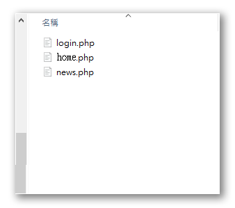

- 開立./css, ./js, ./img, ./icon等常用目錄以利檔案分類及管理
- 將素材檔中的.css, .js, 及icon圖檔複製到相應的目錄下
- 更改版型素材的相關檔名，以符合解題的需要
- 01P01.html => login.php
- 01P02.html => index.php
- 01P03.html => back.php
- 01P04.html => news.php
- 更改版型素材的相關連結及匯入檔內容
- 修改
index.php,back.php中<link>及<script>中的連結路徑，指向正確的位置 - 修改
./css/css.css中的圖片url，指向根目錄下的../icon目錄
- 修改
1 | 版型檔案 index.php、login.php、back.php、news.php |
1 | 檔案css.css |
- 開啟
xampp及apache伺服器，使用localhost或127.0.0.1檢視網頁是否正確顯示，css 的載入是否正確
- 建立
front及back兩個目錄，一個代表前台的相關檔案，一個代表後台的相關檔案，前後台共用的元件則先放在根目錄下，或另開一個comm目錄用來存放共用的元件 - 從
index.php及back.php中分離出中間需要變動的區塊，採用include的方式來動態載入主要的內容區，可以利用f12的開發者工具來檢視要分離的區塊的位置
- 前台的
login.php及news.php去除和index.php相同的部份，只留下中間區塊即可，並將兩個檔案移到./front目錄下 - 前台的
index.php控出的中間區塊成為獨立的home.php檔案，並搬移到./front/目錄下 - 後台的
back.php則挖出中間的區塊成為獨立的元件，並搬移到./back/目錄下，先建立一個檔案名為title.php，之後會成為九個後台功能的基礎版型檔案。
| 根目錄 | |
| front目錄 | back目錄 |
|  | |
- 使用
include指令來重新組合index.php及back.php頁面，並加上判斷式來確保要組合的檔案是存在的。 - 以
get的方式來傳遞各頁面要組合的元件內容，比如do=login表示要看到的是登入頁面，因此在前台的include中可以併入login.php來呈現。
1 |
|